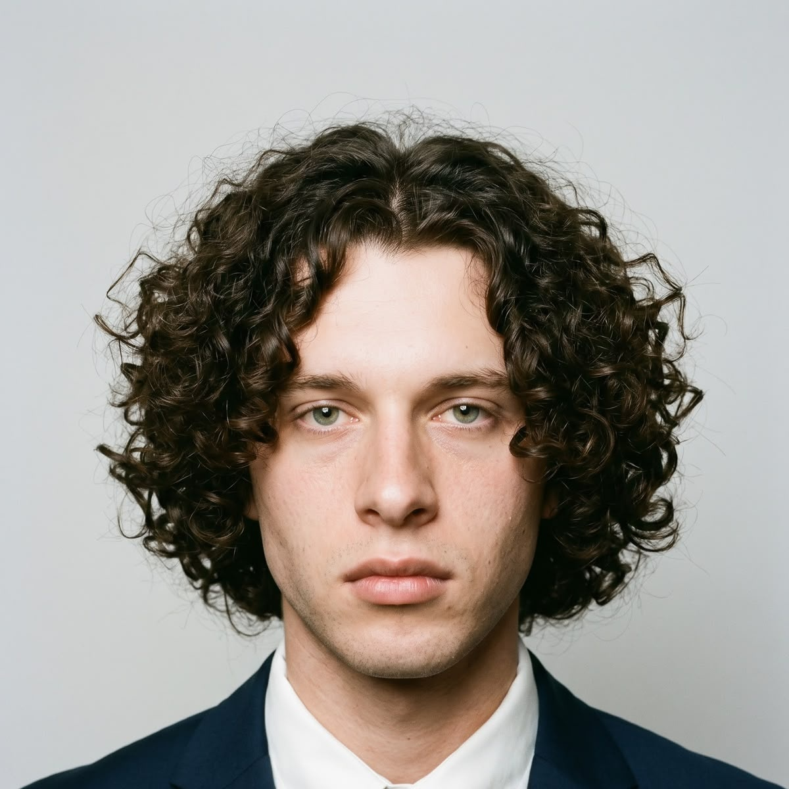

Coding
Learning through building, testing and improving working solutions.

I’m a final-year Bachelor of Computing student at Belgium Campus, building a practical foundation in coding, software development and structured problem solving. I enjoy understanding how things work, breaking complex ideas into smaller parts and turning them into useful solutions.
I’m looking for internships and local part-time practical work opportunities in 2027 where I can contribute to real projects, learn from experienced teams and grow into a capable software developer.
Learning through building, testing and improving working solutions.
Exploring software practices, GitHub workflows and team delivery.
Interested in Raspberry Pi and Arduino integrations.
Belgium Campus · Final year
Applying programming concepts, computational thinking and structured problem solving to coursework, coding exercises and collaborative projects. Practising the full learning cycle: requirements, implementation, testing, feedback and iteration.
English-medium education
Developed a foundation for clear communication, curiosity and continued learning.
Ready to contribute to real projects and turn academic training into meaningful professional experience.
GitHub: Swift · TypeScript · HTML · CSS · JavaScript · Python · C++ · Shell
Belgium Campus work: Java · web applications · MongoDB and database projects
Graphic design & digital fabrication: Graphic design · Blender · Fusion 360 · STL modeling and export · hands-on FDM 3D printing
Professional training: Professional 3D Modeling and Design course · Completed with Honors
Networking & hardware: Router setup and configuration · Wi-Fi and network troubleshooting · Raspberry Pi · Arduino · embedded systems
Audio systems & Dolby: Sound systems and amplifiers · Dolby technology knowledge · hands-on Dolby equipment experience
Selected work from GitHub and BC collaborations.
Web applications, Java applications and database projects created through coursework and collaboration.
WPR381 · PRG381 · DATABASESHardware-integration experiments connecting software, sensors and physical systems.
HARDWARE · EMBEDDED SYSTEMSBox Flasher · Calculator · BC Assignment Recording App
GITHUB.COM/ROEBSSIEOriginal Blender models and STL exports for custom over-rim inlet/outlet pipes and a separate glass-edge clamp with a pipe-ring holder.
BLENDER · 3D DESIGN · STL · FDM PRINTINGIf you’d like to discuss an internship, project or learning opportunity, I’d be glad to hear from you.
172 Emily HobHouse Ave
Pretoria North, South Africa
(Open to relocation worldwide)
React and Vite interfaces, Node.js and Express services, MongoDB and Mongoose data work, and JWT authentication.
Swift, C#, Delphi, Python, TypeScript, JavaScript, SQL, C++, Java, HTML, CSS and Shell. Also machine learning and experience with car coding and diagnostics using VCDS and VAG software.
Jest and Playwright, Git and GitHub workflows, GitHub Desktop, clear Markdown documentation, and iterative project delivery.
Unity and Meta Quest workflows, Android SDK tools, ADB over Wi‑Fi, Android accessibility APIs and MediaSession integrations.
Blender and Fusion 360 modeling, STL preparation and FDM printing. Professional 3D Modeling and Design course, completed with Honors.
Raspberry Pi and Arduino integrations, embedded systems, router setup and configuration, and Wi‑Fi and network troubleshooting.
Sound systems and amplifiers, Dolby technology knowledge, and hands-on experience with Dolby equipment.
Building with others through Belgium Campus coursework and project work, sharing updates clearly and using feedback to improve solutions.